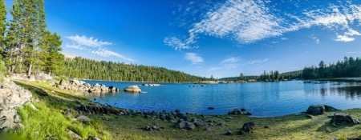
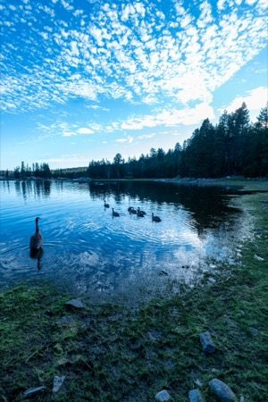
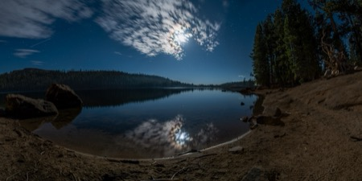
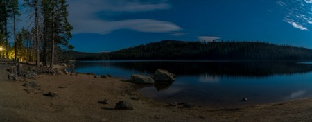
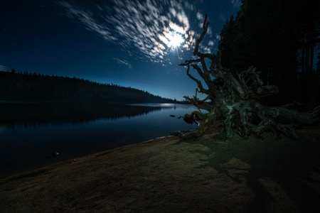
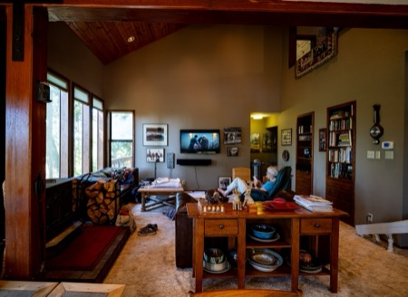
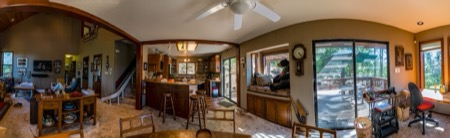
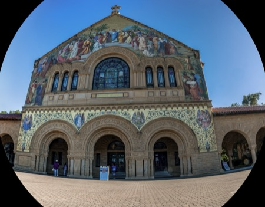
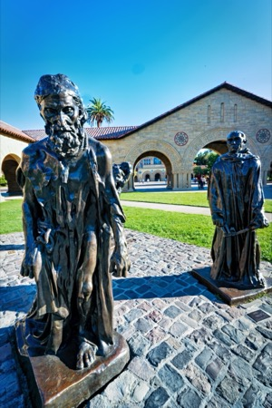
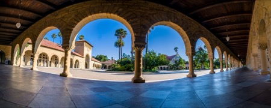

Lake Alpine (High Sierra)
Lake Alpine (High Sierra)
moonlit night at Lake Alpine (High Sierra)
moonlit night at Lake Alpine (High Sierra)
moonlit night at Lake Alpine (High Sierra)
at the cabin (Arnold)
at the cabin (Arnold)
Stanford Memorial Church
The Burghers of Calais (Rodin), Stanford campus
Stanford University campus